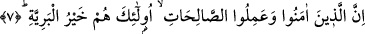

kâfirliği müşriklerin kâfirliklerinden daha hafifti. Fakat bu iki zümre günahların en
büyüğü “küfür” günahlarında ortak idiler. Bundan dolayı azabların en büyüğü
“Cehennemde ebedilik” cezâsını hak ettiler. Kâfirlerin inkârı rif’at/yücelik amacı ile
olduğu için “esfel-i safilin”e gittiler. Çünkü Cehennem; derin, karanlık, çok kuytu bir
yerdeki ateşin adıdır. Nitekim “Cehennem” kelimesi bu anlamı yansıtıyor. Arapçada, bir
kuyunun dibi çok derin olduğunda o kuyuya bu kökten türeme olarak; “bi’r-i cihinnâm”
denir. Dolayısı ile her iki kâfir zümresinin azabta ortak olmaları, azabın nev’inde ortak
olmalarını gerektirmez.
“İşte halkın en şerlileri onlardır.” Yani o adı geçen, Allah’ın rahmetinden uzak
kişilerdir.
Âyette, “yaratıklar” anlamına “beriyye” denmesinin sebebi, Allah’ın onları yoktan
yaratmış olmasıdır. Buna göre âyetin mânâsı “işte, yaratıkların amelce en şerlileri
onlardır.” İlerde mü’minler hakkında gelecek ifâdelere uygun mânâ budur. Bu ifâde,
kâfirlerin neden Cehennemde ebedi kalacaklarının sebebini bildiren bir cümle olmuş
olur.
Aynı cümleyi, “makam ve âkıbet itabarı ile yaratıkların en şerlileri onlardır” şeklinde
anlamak da mümkündür. Bu takdirde cümle, sebeb bildirme değil de, ne feci bir halde
olduklarını te’kit etme cümlesi olmuş olur. Âyette, “onlar” anlamındaki “ulâike” den
sonra, yine onlar anlamına bir de “hum” zamirinin getirilmesinin sebebi, ifâdeye
“sâdece” gibi bir hasr anlamı katması içindir. Böylece âyetin mânâsı, “İşte yaratıkların
en şerlileri sâdece onlardır, onlardan başkası değil” şeklinde olmuş olur. Neden onlar
yaratıkların en şerlileri olmasın ki! Kâfirler hırsızlardan daha beterdir. Çünkü onlar
Allah’ın kitabında Hz. Peygamberin sıfatlarının yer aldığı cümleleri çalmışlardır. Onlar
yol kesen eşkıyadan beterdirler. Çünkü, hak dinin halka ulaşmasının yolunu
kesmişlerdir. Onlar kaba saba katı kalpli câhillerden de daha kötüdürler, çünkü bile
bile inkâr, “küfr-i inadî”dir. Ve böylesi bir küfür ve inkâr câhillerin küfür ve
inkârlarından daha beter olur. Buradan şu sonuç ortaya çıkıyor; kötü âlimlere yönelik
tehdid herhangi bir kimseye yönelik tehdidten daha ağırdır. Ancak içlerinden tevbe eden
ve müslüman olanlar bu tehdid dâiresinin dışındadır.
Bazı âlimlere göre, bu âyet-i kerimede yer alan hükme, onlardan önce yaşamış kâfirler
dâhil değildir. Çünkü Fir’avn onlardan daha beter daha kötü idi. Buna karşılık
mü’minlerin erecekleri sevabı konu alan ikinci âyet ise, bütün mü’minlere; eskiden
geçen mü’minlerle daha sonra gelen mü’minlere şâmildir. Çünkü onlar milletlerin en
üstünü, en faziletlisidirler.
Nâfi’ ve İbn Zekvân “el-beriyye kelimesini aslı üzere hemzeli olarak (el-berîe)
şeklinde okumuşlardır.